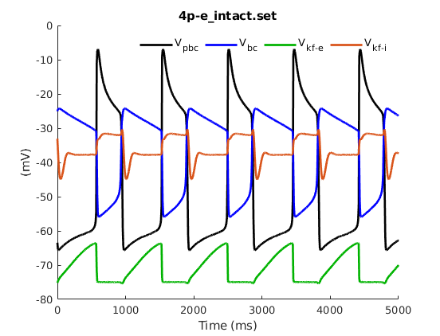
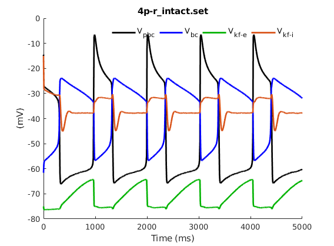
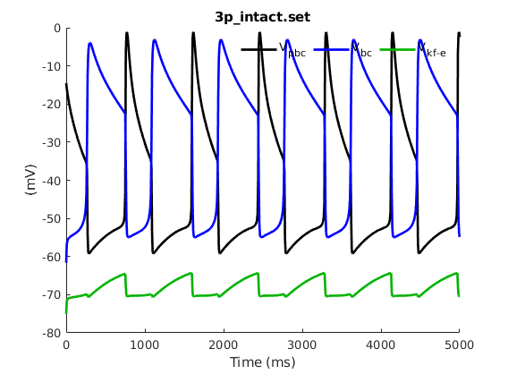

This directory contains model files and scripts which were used to explore the model presented in the research article:
Wittman, S. , Abdala, A. P. and Rubin, J. E. (2019), Reduced computational modelling of Kolliker-Fuse contributions to breathing patterns in Rett syndrome. J Physiol, 597:2651-2672. doi:10.1113/JP277592
The model files (with extensions .ode and .set) are designed to be used with the free software package XPPAUT. The software and associated documentation can be obtained here:
http://www.math.pitt.edu/~bard/xpp/xpp.html
The folders "3p", "4p-e", and "4p-r" each refer to one of the models discussed in the article. Each folder contains a single .ode file, which contains the main equations for that model. Each folder also contains several .set files, which correspond to various regimes (i.e. parameter settings) discussed in the article. The models and regimes can be explored in XPPAUT by first loading an .ode file, then using the "Read set" command to read various .set files. The main features of interest for each model can be explored in XPPAUT.
The folder "Matlab scripts" contains scripts used to run model files in XPPAUT over iterations of parameters, and to track and plot the results. The scripts include "traj_plotter_many.m", which was used to generate voltage-time plots for multiple figures; "orbit_tracker.m", which was used to generate the orbit panels in Figures 6 and 7; "rett_figure_script.m", which was used to generate the inhibition-period plots in Figure 5; and "set_bar_graphs.m", which was used to generate the bar graphs in Figure 9. All of these scripts rely on functions from Rob Clewley's XPP-Python interface (see XPPAUT documentation site). Clewley's scripts are included by permission; a more recent version of them is available at his github that may or may not be compatible with our scripts:
https://github.com/robclewley/xpp-matlab Our scripts are mainly included for transparency, and therefore they were only lightly edited and commented. Expect potential errors involving filenames and directories if these scripts are downloaded and used unedited. Example use:
addpath('clewley')
addpath('Matlab_scripts')
traj_plotter_many
In less than a minute you should see a few figures similar to Figure 3A,D in the paper:



For technical questions or concerns, please contact: swittman52 at gmail.com
Sam Wittman, 6 October 2019